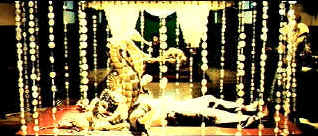

| Cell,The (SE)B,B- |
| New
Line/2000/107/ANA 2.35 |
In the middle of a high tech laboratory an interesting series of
experiments are taking place in para-psychology. Suspended in body suits hanging on airplane wire,
two figures remain dormant behind a thick glass wall. Under the body suits and electrodes, a
fascinating interaction is taking place within the world of the mind. Two minds in one fantasy,
exchanging ideas. Will the woman psychologist be able to breakthrough to the young boy frozen out
of our world? It's good enough material for a film. Another film, the hunt for a serial killer, is
taking place at the same time. The two plots lines intersect providing some fascinating visual,
some less than satisfying psychology and a fair measure of excitement.
 |
| A fairy tale and blood cocktail. ©New Line |
There's a bizarre and perverse element to mixing the fairy tale visuals with
the conventions and depravity of a serial killer flick. That director Tarsem Singh pulls it off is
quite an achievement. The visual style of The Cell, the languidly graceful treatment of the
other world, take the straight forward and run-of-the-mill serial killer tale up several notches.
Jennifer Lopez is effective as the adventurous psychotherapist Catharine Deane.
She certainly fills the sensual body suits worn in the special sleep state to transmit one's mind
into the "other world." Vince Vaughn keeps on track in his hunt for the killer as FBI
Agent Novak. Vincent D'Onofrio once again totally disappears into a role. From the bug man in Men
in Black to the creator of Conan in The Whole Wide World to Orson Welles in Ed Wood,
here's an actor that would have no trouble playing the invisible man. D'Onofrio's serial killer
Carl Stargher is thoroughly disgusting. It's another incarnation of the bug man.
Too much enhancement! This one could have been a contenda but someone
punched up the edginess making those beautiful fantasy sequences less than pristine. The additional
information creeps into scenes busy scenes making them actually look softer. Color resolution is
excellent. Dig those pinks petals surrounding a sensuous Jennifer Lopez. Overall light output is
very good in the various lighting schemes. Shadow detail reveals the intent of the director and
cinematographer. The excellent Dolby Digital 5:1 mix provides an encompassing home theater
envelope.
New Line has put together another excellent special edition. Two feature
length commentaries add layers tot he experience of The Cell. Director Tarsem Singh's rapid
fire delivery of language is sometimes breathtaking, but that's what the pause and rewind buttons
are for. Singh is consistently enthusiastic. There are deleted scenes with commentary, a full
length commentary fromt he production team, an original documentary and more.
|
|
|
|

Selections from the Feature Archive
include articles on Akira Kurosawa, Frank
Darabont, Blonde Bimbos, Hollywood Street Gangs, or Vietnam: The
Hollywood Pariah, and many more....
Film noir: The phrase hangs awkwardly on the tongue,
shadowy images peek out from behind half-closed doors. Click on the Noir and Noir
Again symbol for a look into the dark spaces of Hollywood's revisiting of film noir.
 
DVDPlanet is the DVD
incarnation of legendary laser retailer Ken Crane's. Deep discounts and serious service.

A self-proclaimed bastion of irreverence place where Joe
Public smacks the heck out of the studio execs that treat us like cattle.
 Direct from the corridors of the Home Theater Forum, Home Theater Talk is the
newest place on the Net to discuss everything home theater. Friendly atmosphere and knowledgeable
folks are the secret ingredients. Direct from the corridors of the Home Theater Forum, Home Theater Talk is the
newest place on the Net to discuss everything home theater. Friendly atmosphere and knowledgeable
folks are the secret ingredients.

The
Movie Poster Archive includes extensive poster images from the films of stars like Susan Hayward,
Kirk Douglas, Katharine Hepburn and many more. Our featured star is Errol Flynn. |